Первая большая экспедиция за пределы привычного мира. Её целью стала крепость Незера и стержни ифрита, а самым опасным эпизодом — сражение у портала на обратном пути. Эта глава собрана по эфритонской летописи и фотографиям, сохранившим этапы похода.
§ 1. Подготовка к экспедиции
В 1240 году Эфритония приступила к подготовке похода в Незер. Экспедиция задумывалась как большое путешествие с конкретной задачей: добраться до крепости и добыть стержни ифрита. Для государства это означало выход за пределы обычной территории и необходимость заранее подготовить ресурсы, снаряжение и путь возвращения.
Подготовка стала отдельным историческим периодом. На сохранившихся снимках видны разные моменты перед выходом: от ранних приготовлений до последних этапов перед отправлением. Эти изображения важны не только как красивые виды Minecraft, но и как свидетельства последовательности событий: сначала страна готовилась, затем отряд отправился в измерение.
В экспедицию взяли двух собак. Остальная стая была объявлена предательской и казнена на площади. Для летописи это один из самых суровых эпизодов подготовительного времени. Уже в начале пути погибла первая из двух собак; вторая сопровождала отряд дольше, но не дожила до прибытия к крепости. Обе потери остались частью памяти о кампании.
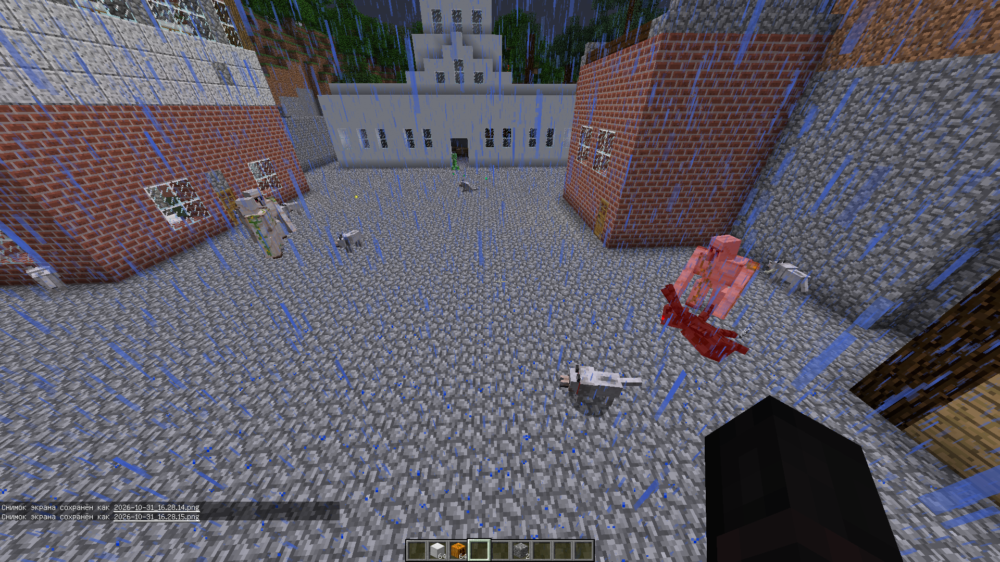
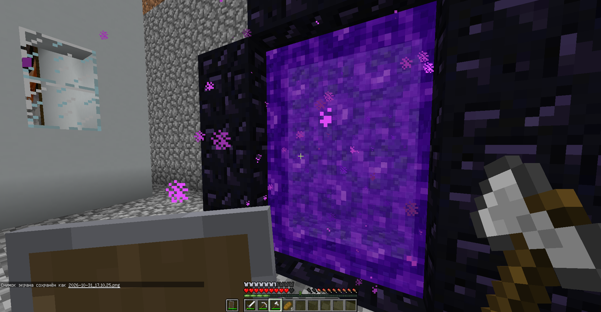
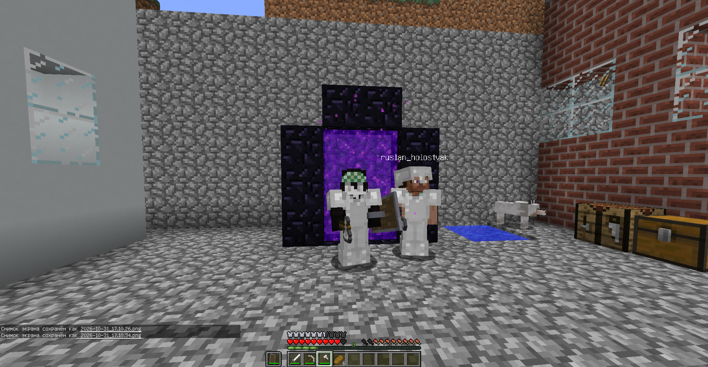
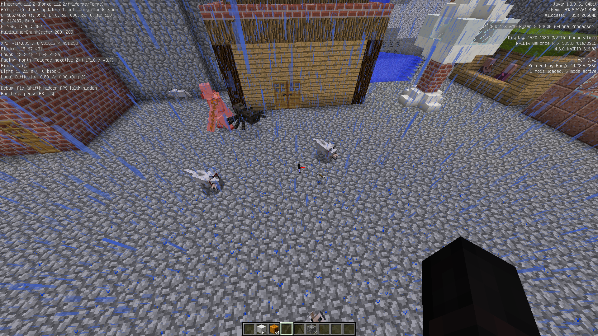
§ 2. Путь через Незер
После завершения приготовлений отряд вошёл в Незер и начал продвижение к крепости. Само измерение стало главным испытанием маршрута: привычный ландшафт сменился опасной и непривычной средой, где каждый следующий участок пути требовал осторожности. Цель оставалась неизменной — отыскать крепость и добраться до источника стержней ифрита.
По дороге эфритонцы сталкивались с ведьмами и свинопасами. Эти встречи сделали путь напряжённее и показали, что экспедиция не сводилась к простой прогулке между порталами. Отряд продолжал двигаться вперёд, несмотря на угрозы и уже понесённые потери.
В летописи не сохранилось точного описания каждого перехода и каждой стычки. Поэтому эта глава не приписывает участникам вымышленных манёвров или несуществующих командиров. Важный зафиксированный результат состоит в том, что экспедиция сумела пройти через Незер и достигнуть крепости.
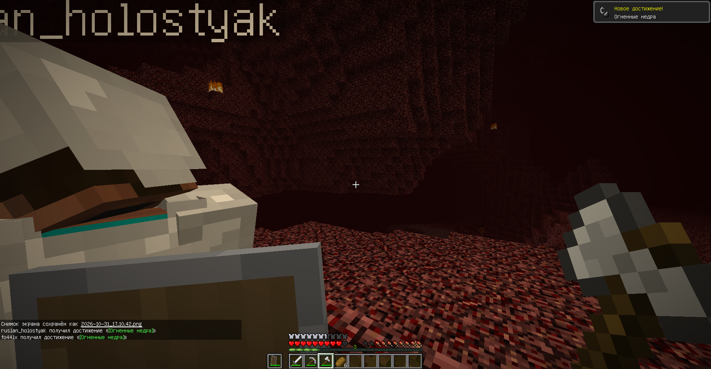
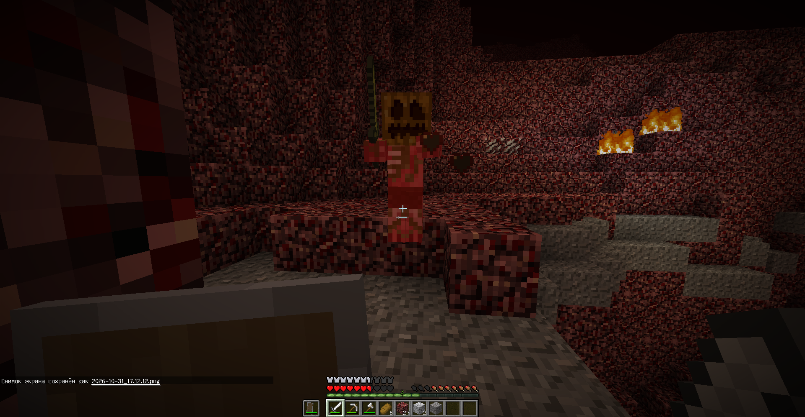
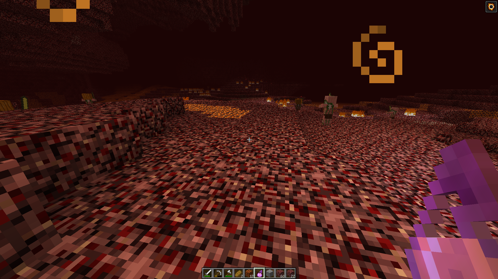
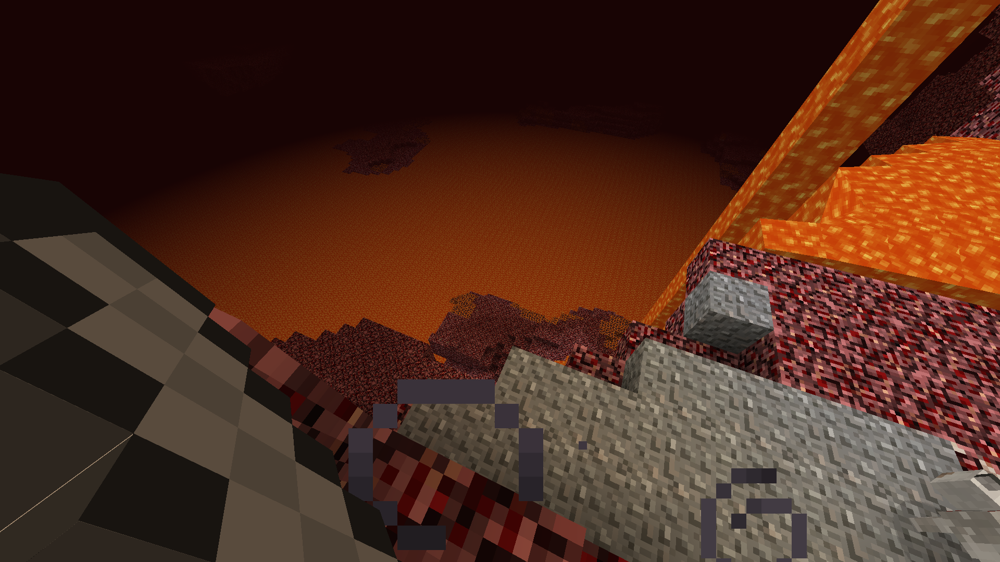
§ 3. Крепость и добыча стержней ифрита
Достижение крепости стало главным успехом первой великой экспедиции. Именно ради этой цели готовился поход: добраться до крепости Незера и добыть стержни ифрита. После долгого пути задача была выполнена, и у Эфритонии появился ценный ресурс, который позднее вошёл в число государственных реликвий.
Однако прибытие к крепости не означало завершения кампании. Отряду предстояло вернуться домой. Поход в незнакомое измерение и возвращение через портал были двумя частями одной операции: добыча имела значение лишь при условии, что участники смогут доставить её обратно в родной мир.
Сохранившиеся кадры этой части кампании дополняют рассказ о достижении цели. Они позволяют увидеть не только начало маршрута, но и эпизоды, связанные с крепостью и заключительной частью пути.
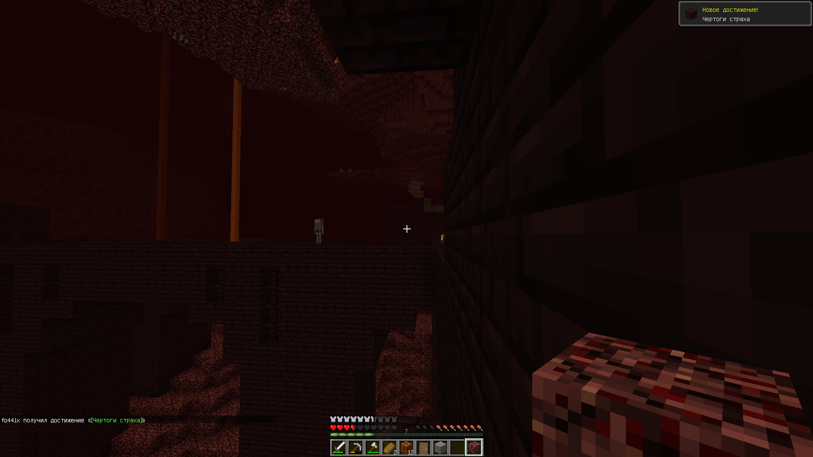
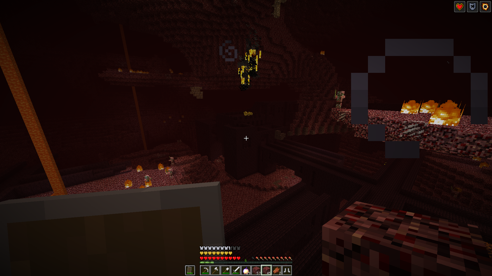
§ 4. Битва у портала
На обратном пути самым опасным событием стала большая битва у портала домой. Именно этот эпизод выделяется в рассказе создателей как кульминация Незерской кампании. Портал был точкой возвращения в обычный мир, поэтому сражение у него имело особое значение: от исхода боя зависело, смогут ли участники завершить путь и вернуться в Эфритонию.
Летопись подтверждает, что у портала произошла крупная битва, но не содержит точного списка противников, численности сторон и потерь. Поэтому архив сохраняет сам факт сражения и его место в истории похода, не добавляя неподтверждённых цифр. Для этой главы важно то, что отряд преодолел последний серьёзный рубеж и вернулся домой.
К 1245 году Незерская кампания завершилась. Полученные стержни ифрита были доставлены в Эфритонию, а память о походе сохранила сразу несколько связанных тем: подготовку, потери двух собак, опасности Незера, достижение крепости и битву у портала.
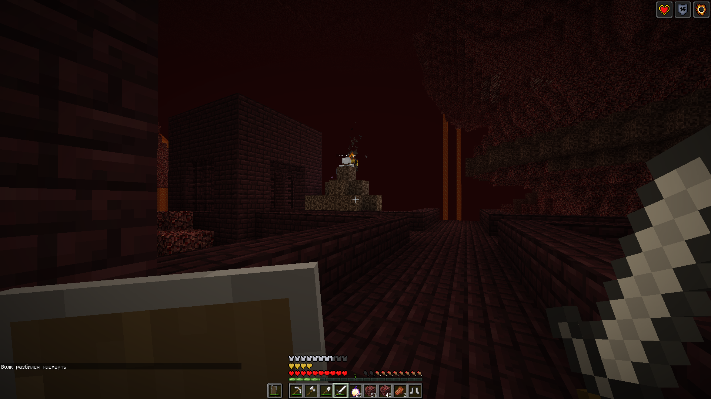
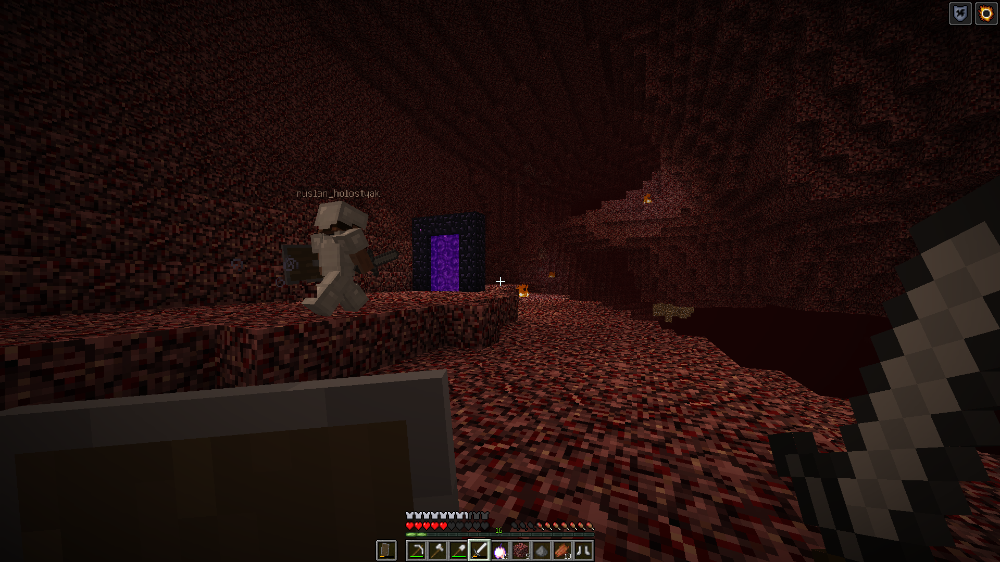
§ 5. Итоги и значение кампании
Незерская экспедиция стала первым большим испытанием Эфритонии за пределами родного мира. Она показала, что государство способно подготовить продолжительный поход, достичь удалённой цели и вернуться с важным ресурсом. Одновременно кампания оставила тяжёлые воспоминания о потерях животных и опасностях обратного пути.
После возвращения страна не остановилась на достигнутом. В 1245 году началась подготовка к следующей экспедиции — походу в Энд. Таким образом, Незерская кампания стала первой главой целого периода великих походов, который завершился только к 1250 году.
Главное о Незерской кампании
- 1240 год — начало подготовки и выход в Незер.
- В поход отправились две собаки; обе погибли до завершения экспедиции.
- На пути встречались ведьмы и свинопаса.
- Эфритонцы достигли крепости и добыли стержни ифрита.
- На обратном пути произошла большая битва у портала.
- 1245 год — возвращение и завершение кампании.
Точные потери в битве у портала и подробный состав противостоявших сил в доступной летописи не указаны.